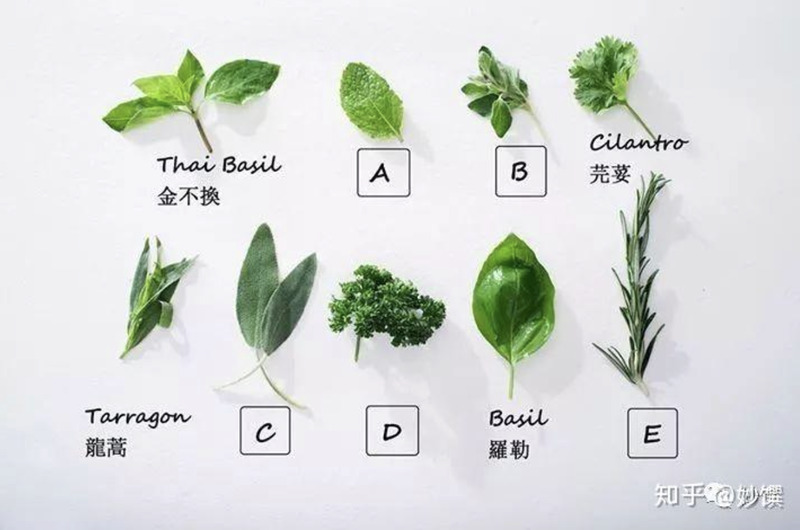

来源：知乎
| 香草 | 气味 | 用途 | 注释 |
|---|---|---|---|
| 罗勒 Basil | 甘甜，略带咸鲜味 | 青酱 Basil Pesto | 全能香料 |
| 欧芹 Parsley | 清新，所以百搭！ | 沙拉; 沙拉酱汁; 海鲜料理; 汤品; 面包 | |
| 百里香 Thyme | 甘甜温和，略带辛香 | 几乎炖煮任何禽类、猪牛羊、海鲜还有蔬菜料理 | 又名麝香草 |
| 迷迭香 rosemary | 香味浓郁，带有松木香，甜中微苦，气味强势 | ||
| 莳萝 Dill | 温和不刺激，清香甘甜，淡香料味 | 烹调鱼虾贝类，和三文鱼尤其搭；黄瓜沙拉；酸奶酱和沙拉酱 | |
| 鼠尾草 Sage | 本味浓烈，夹杂些樟脑气味 | 烹调肉类，缓和腥味；意式燉饭 | 气味强烈有解腻的功效，西餐烹饪里喜欢用它与油腻的东西搭配 |
| 牛至 Oregano | 气味浓烈，辛辣略苦涩的口感 | 做披萨；制作意面酱汁；烹调各种肉类及鱼，去膻 | |
| 龙蒿 Tarragon | 浓郁但不冲，比较温和，略带甘甜味道接近八角 | 烹调海鲜；炖猪牛羊红肉；拌沙拉 | 味道接近八角 |
| 虾夷葱 Chive | 味道柔和，略带清香 | 撒在西式炒蛋和煎蛋上；拌在奶酱里；装饰浓汤 | |
| 香叶／月桂叶 Bay Leaf | 淡淡甜味 | 炖肉 |
一大波异国美食，在微信公众号 “ 妙馔 ” 等你。我是coffee cat，住在德国，主业坐家翻译，是个虔诚煮妇。世事难料，看来看去还是盘中餐最可靠。等你，同道中人。

和你一样，好多年前，我根本不懂香草的世界。葱姜蒜八角花椒才刚整明白，哪有闲情去研究这些杂草？
" 你管谁叫杂草?" 草们集体坐不住了。好好我错了，你们可是厨房里的大宝贝，是西餐烹饪的灵魂，少了你们就如同少了葱姜蒜的中国菜会无法想象一样。
有时坐在西餐馆里感叹盘面之美，就那么几根漫不经心的香草，把菜肴的格调又拉高了一层。
香草(herbs)和香料(spice)是西餐烹饪用到的调味。一般来说，香草是植物带有香味的叶子，而香料是植物的树皮、果实、根和茎。香草分为新鲜的和风干的，新鲜香草入菜要比干的好。读大学时去买菜，和它们打过无数的照面却茫然不知：这货是谁？吃的？养着玩的？我不识它们，也不关心。
后来爱上一首歌，电影毕业生的插曲 “卡斯特罗集市”。歌里反复吟唱着一句"Parsley, sage, rosemary and thyme" , 听得是一头雾水，数年后才知道原来是四种香草" 欧芹，鼠尾草，迷迭香，百里香"。
如果香草是推开西餐世界的一扇门，本期就来聊它们，仅是浅谈。本期有点长，能拉到最后的都是真爱。